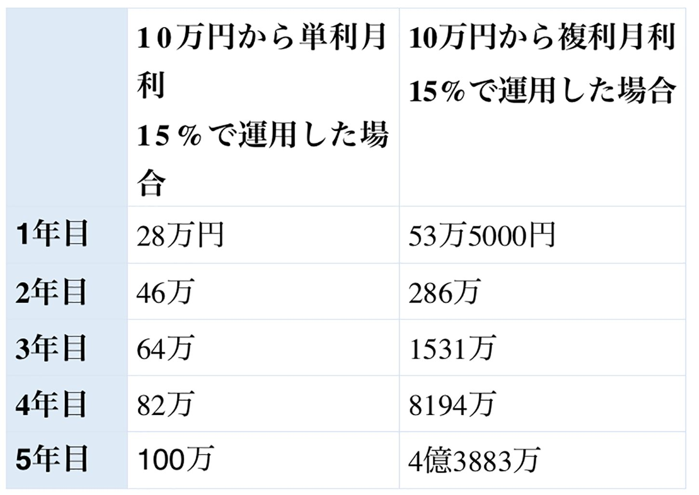
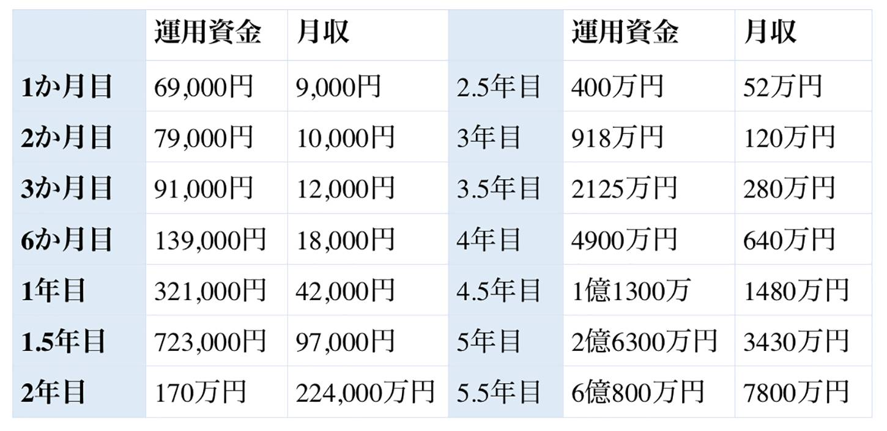

| ＦＸ初心者向け超入門 増補版 | |
| 米田誠 | |
| (2017) | |
米田誠
初めまして、米田誠と申します。
突然ですが、「ＦＸ」という言葉を聞いてあなたは何を思い浮かべますか？ 恐らく「ＦＸはギャンブル」「お金が一日で無くなる」こう思っている人が多いのではないでしょうか。
実は、それは大間違いです。確かにＦＸトレーダーの中には「一日で１，０００万円溶かしてしまった」このような言葉を言う人も少なくないかもしれません。でも、一日で１，０００万円溶かすなんて負ける原因が必ずあります。ＦＸをやる全ての人が大損する訳ではないのです。
私自身は慶應在学中に家庭教師の派遣会社で起業し、様々なビジネスを経験するも、投資に大きな可能性を見出し、投資家に転向。現在、ＦＸを始めて４年目になりますが、順調に資産を増やし続けています。一日に稼ぐ金額は日によって違うものの、一日に70
万円収益が上がることもあれば、２７０万円という日もあります。ちょっと想像もつかない数字ですよね。ＦＸを極めると、一日でこれだけの金額を稼げる可能性があるのです。
このような実績をお話しすると「それは米田さんだからできるんでしょ？」と言われそうですが、全くそんなことはありません。今でさえＦＸで結果を残せているものの、最初はもちろん初心者でした。知識がゼロの状態から、自己投資をしてプロの方に一から教えてもらったのです。初心者でもＦＸで結果を出すことができます。
私がこの本を出版しようと思ったのも、「投資を通して、人を豊かにしたい」という夢があるからです。将来的には投資家を育てる教育機関を設立したいと思っています。その夢を叶えるための手段として、ＦＸがあります。
あなたにも「ずっと叶えたいけど、叶えられていない夢」ありませんか？ 「夢とかやりたいことはあるけど、お金がないしなあ......」と思って諦めていませんか？ だとしたら、諦めるのはまだまだ早いです。私は、ＦＸは夢を叶えるための最適な手段だと考えています。
でもＦＸというと、「損している人が多いんじゃないか」というイメージを持っている人が多いです。私のところにいただく質問で、そのようにおっしゃる人もいます。日本人はどちらかというと、諸外国に比べて「投資＝賭け事」だと思い「ＦＸをやるのは良くない」というイメージを持つ人が多いです。それに引き換え、海外では投資のことをどのように思っているかご存知でしょうか？
実は海外では「投資家」という職業が憧れの存在という国がほとんどなんですよね。日本とは真逆なのです。
少し話が逸れましたが、海外では投資を使ってお金を稼ぐことは身近な存在になっています。「海外だから通用する世界なんじゃない？」と思われるかもしれませんが、日本人だから勝てない、という訳ではありません。もはやＦＸは世界的にもメジャーな投資なのです。
でも初心者全員が必ず勝てる訳ではありません。同じ初心者でも（もちろんＦＸトレーダーの人も）勝てる人と負ける人に分かれます。では、それは一体どういうことなのか。どういうトレードをすれば、初心者でも結果が出せるのか。その答えはこの本の中にあります。ぜひ最後まで読み進めてみてください。きっとあなたの中のＦＸの常識が覆され、驚愕することでしょう。
また、私に質問したい、聞きたいことがあるという方は、ＬＩＮＥ＠
にご連絡ください。
https://goo.gl/HoKJNE
皆さんは「ＦＸは経験が長いほど勝ちやすい」と思っていませんか？ 経験が長い方が、たくさんの情報や知識があって勝ちやすいというイメージがあるかもしれません。
しかし、初心者の方が勝ちやすいのです。恐らく、「ＦＸは初心者の方が勝ちやすいなんてあり得ない！」と思った人が多いはずです。嘘かと思うかもしれませんが、実はこれ、本当にそうなのです。
どうして初心者の人でも結果が出せるのかというと、一番の理由は「事前知識やトレードの経験がないから勝てる」ということが挙げられます。きっとこの時点で驚く人が多いのではないでしょうか？ 普通だったら「ＦＸは事前知識と経験がないと勝てないでしょ」と思いますよね。
もちろんＦＸの知識がないとトレードは難しいです。でも事前知識やトレードの経験がないからといって「ＦＸは勝てない」と諦める必要は全くありません。どうしてかというと、「たくさんの情報が頭にあるから、勝てる」という訳ではないからです。
それに、事前に知識や経験があると、勝てるノウハウでトレードしようと思っても、過去のトレード経験が邪魔してしまいます。「こうかな？」「前に成功したこの方法で勝てないかな？」などといった感情が入ってしまい、結果負けてしまのです。
後程詳しくお話ししますが、ＦＸは確率論です。勝てるノウハウでトレードできれば勝率は７割。そのノウハウを続けていくだけで勝つことができます。
ＦＸには何千通りものやり方がありますが、たくさんのやり方を組み合わせたから勝てる、という訳ではありません。そうではなく、「いかに感情を入れずに同じノウハウで取引しているか」が大切になります。何もＦＸの知識がない状態の方が、頭が真っ白ですんなり入ってきて、不必要な情報が少なくシンプルなトレードができるのです。
これがＦＸと普通のビジネスと違う部分になります。ビジネスは成功した事例があれば積極的に取り入れます。そして悪い部分があったら改善するとパフォーマンスが上がっていきますよね。このように試行錯誤を繰り返していきます。
しかしＦＸの場合は違います。「いかに感情を入れずに同じ取引を続けるか」が重要になるのです。実際に私たちのコミュニティでも、経験者よりも未経験者の方がお金の増えるスピードは速い傾向があります。ところがＦＸ経験者がトレードをしようとすると、今まで勉強してきたノウハウが入ってきて、「このルールではだめだ」と思い、ルール通りにできず負けてしまうんですよね。
これはゴルフやテニスといったスポーツと同じことが言えます。一度フォームなどやり方が身に付くと、なかなか他のフォームには直しにくいものです。かなり時間がかかってしまいます。
ではどうしたら初心者でも勝てるようになるのか？ 気になりますよね。それは後程詳しくお話ししていきますのでもう少し待っていてください。
ちなみに、私は今２，２００人規模のＦＸコミュニティの代表をしていまして、メンバーさんは初心者がかなり多いのですが、しっかり結果を出しています。それは、一から私がメンバーさんにトレード方法を教え、長期的にサポートしているからこそ出た結果だと思っています。
とはいえ、トレードを始めるにもまずは正しいマインドを持って始めることが重要になります。特にＦＸは、このマインド次第で結果が左右されると言っても過言ではありません。
「ＦＸで必要なのってマインドよりもノウハウなんじゃないの？ どうしてマインドが必要なの？」と思っている人も多いのではないでしょうか。ＦＸを始める前にまずは、今皆さんの中にあるＦＸのトレードをする際の考え方を変えていかなければなりません。では、今から説明していきますね。
まず、前提として「ＦＸは確率論」ということが挙げられます。一つ例に挙げると、実はパチンコやカジノなどのギャンブルも、心理的にＦＸと似たような側面があります。負けた時に感情が入ってしまうとさらに負けます。「負けてしまった......絶対取り返したい」と思って追加するお金を増やしてしまうのです。だから負けた時に感情が入ると大損してしまいます。
では結果が出る人はどのようなマインドでトレードしているのでしょうか？
「損をしても〝今日は外れる日だったんだ！〟と頭を切り替えられる人」
そうです。このマインドが勝つためには必要になります。もしかしたら「損をしたのにこんなメンタルでいれるはずがない！」と思うかもしれません。でもこの先、ＦＸは勝ち負けを繰り返すので損をすることは避けて通れない道です。このマインドを身に付けておかないと一回のトレードごとに一喜一憂することになってしまいます。いかに負けた時に頭を切り替えて、平常心を保てるかが大切になるのです。
ＦＸは最初に投資する資金の金額にもよりますが、最初に損するのは数百円程度。勝つのも数百円くらいです。始めてすぐ大きく勝てる訳でもなければ、大損することもありません。後程詳しくお話ししますが、損する金額は自分で決めることができます。最初に「勝つマインドとノウハウ」をしっかり身に付け、コツコツと続けていけば結果を出すことができるのです。勝てるスタンスとしては事務のＯＬさんの仕事ぶりをイメージしてください。事務の仕事は「これやり方違うんじゃない？」と主観を挟まずに、受けた仕事を機械的にこなしていますよね。こういった機械的な作業が出できるかが、ＦＸで勝つためには重要です。
私が運営しているコミュニティで勝てる人というのは、やっぱり「感情に流されないでルール通りにトレードできている人」になります。ルールを守ることが一番大切になりますね。
ただし、ＦＸをする上でもう一つ気を付けて欲しいことがあります。それは「今までの経験を元にトレードすること」です。
「ＦＸこそ、成功した経験を生かすべきなんじゃないの？」と思う人もいますよね。でも実は、その成功経験が罠です。大損する原因になってしまいます。
「ビギナーズラック」と言って初心者の人でも、いきなりＦＸで20
～30
万円勝てる人は確かにいます。でも怖いのが、
「一度勝ってしまうと負けを認めなくなってしまう」
ということです。初心者の人で最初に大きく利益が出てから一度負けると、「負けたくない」という気持ちが先行して、引き続き取引を続けるために資金を次々と投入し、トレードを続けてしまいます。そして負け続けてしまい「気が付いたら大損してしまっていた......」ということになってしまうケースがあります。こうなってしまったら、損した分のお金を二度と取り戻すことはできません。こういった取引をしているからこそ、「一日で１，０００万円溶かした」なんてことが起こってしまうのです。
実際にＦＸでもトレードを繰り返していくうちに、負ける経験をする反面、勝てる経験もたくさん積むことになります。でも一回成功したからといって、次も同じ手法でトレードして勝てるとは限らないのです。
特に女性よりも男性の方が、過去の成功経験を元に「次も同じやり方でトレードすれば成功するだろう」と思いがちです。いわば自己ルールでトレードしてしまうのです。本来であれば自己ルールで結果を出すためには検証しなければなりませんが、検証するのにも少なからず資金が必要になりますし、これも損する可能性があります。よって、自分の判断だけでトレードするのは危険なのです。まずは勝てるノウハウで同じ手法の取引を続ける。これが、ＦＸで結果を出すためのコツになります。
「じゃあ、その勝てるノウハウって何？」と思いますよね。勝てるノウハウを身に付けるにもコツがあるのです。
ここまでＦＸに必要なマインドや自己流のルールでトレードするのは危険......というお話しをしてきました。次にお話ししたいのが「ＦＸには結果の出せるトレード方法がある」ということです。
自己流でやるのは危険。ではどうすればいいかというと......そうです。ＦＸはプロに教わるのが一番いいのです。実際にプロと同じ手法でトレードをすれば結果が出るようになります。
たまに私に質問をいただく人で「お金も時間もないので、独学でやろうか悩んでいます」という人がいます。その方とお話しをした時は「じゃあ一回独学でやってみましょう」となってその日は終わったのですが、後日また私まで「ＦＸでお金無くしてしまいました」連絡がありました。独学でやったけど上手くいかなかったので、コミュニティに入って学びたい、という連絡だったのです。
このように「独学でやっていたけど負けてしまったから教えて欲しい」という人は結構います。これだとお金も時間も節約するために独学で始めたのに、独学で勉強して損した金額を考えると結局高くついてしまいますよね。だからこそ、プロに教わると稼げるノウハウが身に付けられ、最短ルートで結果を出すことができます。
実際、私がＦＸを始めた時も市販の本は買いませんでした。事前知識を入れず、真っ先に実績が出ているプロトレーダーの方に教わったのです。
プロの方は過去のチャートを見返し、一つひとつのノウハウを検証するためにリアルなトレードも行います。でもそれは初心者がやるには膨大な時間と労力がかかってしまいます。私の知り合いでは、なんと11
年かけて検証を行ったと言う人もいました......！ 11
年ってかなりの時間と気力、体力も必要になりますよね。その方は今では月に数千万円稼いでいる人なのですが、初心者が一から独学でやろうと思うといくら時間があっても足りないですし、プロから教わった方が、結果が出るまで時間が短縮できます。
「プロと同じ手法で素人が結果を出せるものなの？」と不思議に思うかもしれませんが、遅かれ早かれ結果を出すことができます。私がいつもトレードしている手法はいたってシンプルです。初心者でも真似することができます。「真似することが結果を出す最短ルート」になるのです。
どうしてプロと同じ手法で初心者でも結果が出せるようになるかというと、シンプルなトレードを実践しているからです。
こういう話をすると、「米田さんのやり方を初心者が真似をして、米田さん自身は損しないんですか？」という質問をいただきます。確かに「全く同じやり方でやると飽和して勝てなくなってしまうんじゃないか......」と思いますよね。でも実際はそんなことありません。コミュニティのメンバーさんも私と同じやり方で結果が出ている人は大勢います。ＦＸはプロの真似をしても負けないからこそ、教わった方がより結果までの時間が短縮できるのです。
他にも個人でできるビジネスは探すとたくさんあります。聞いたことのある人も多いかと思いますが、有名なのがアフィリエイトや物販ですね。しかし、これらのようなビジネスに再現性はありません。プロから教われたとしても、「稼げるためのノウハウ」のみ。ネットビジネスで稼ぐためには正解はないですし、やり方も１００人いれば１００通りあります。正解がない分、完全に真似をしてもプロと同じように稼ぐことはできないのです。
その反面、ＦＸはプロと同じやり方でトレードすれば結果を出すことが可能です。もちろんＦＸトレーダーも世の中にはたくさんいますし、これも１００人いれば１００通りのトレード方法があります。
でも私たちは初心者でも稼げる独自のトレード方法を検証し、編み出しました。これから、私が実際にどのようなトレード方法で稼いでいるのかをお話ししていきますね。
さっそく具体的な話に入りたいのですが、その前にＦＸの基本的な知識や用語について、解説していきたいと思います。
第１章では「勝てる人と損する人の違い」についてお話ししました。初心者の人の方がＦＸに有利、ということはイメージつきましたでしょうか？
今は若い方からもＦＸについて問い合わせをよく頂くのですが、特によく聞かれるのが「ＦＸって何？」という質問です。この本を読んでいる皆さんも「ＦＸって外国の通貨を使った取引だけど、実際にどんな投資なのかがよく分からない」と言う人もいると思います。そこで、ここでは「そもそもＦＸとはどういう投資なのか」。初心者の方でもわかり易くお話ししていきたいと思います。
【ＦＸは何を使って稼ぐのか？】
ＦＸとは少し話が逸れますが、皆さんは普段スーパーで野菜とか果物などの食材を買いますよね。スーパーのような小売りは物を安く仕入れて売る、というのがビジネスモデルになります。これをＦＸに置き換えて考えてみましょう。スーパーでは商品を売買しますが、ＦＸでは通貨を取引（売買）するのです。
例えば、ニュースで「１ドル１００円になりました」「円安になりました」「円高になりました」という報道を聞いたことがあると思います。ですがこの「１ドル＝１００円」というのは、ずっと同じ金額ではありません。価値が変わっていきます。これは時間が経つと、「１ドルが１０５円」になったりもするのです。そこでＦＸというのは、この通貨の価値の変動を利用して稼いでいきます。
これだけだとちょっとイメージしにくいと思いますので、もう一つ海外旅行での両替を例に挙げてお話ししますね。
これから皆さんはアメリカに行くとしましょう。海外に行く（行った）とき、空港や銀行で日本円の現金をアメリカのドルに両替しますよね。ここであなたは、「１ドル１００円の時に10
万円を両替」しました。そうすると、両替後は１，０００ドル（１００円の１，０００倍）になります。しかし、不測の事態が起こってしまい急遽帰国をすることになったので、また再度両替をすることになってしまいました。再度あなたは空港の両替所に行き、ドルを日本円に両替することになります。ですが、両替しようとした日のレートが以下のように変わっていました。
－
－
－
－
－
－
－
－
－
－
－
－
－
－
－
－
－
－
－
－
－
－
－
－
－
－
－
－
－
－
－
－
（初日）１ドル１００円→（今）１ドル＝１０５円
－
－
－
－
－
－
－
－
－
－
－
－
－
－
－
－
－
－
－
－
－
－
－
－
－
－
－
－
－
－
－
－
そしてこのレートで、元から持っていた１，０００ドルを日本円に両替すると、10
万５，０００円になるのです。初日に日本円からドルに両替しようと思った時は10
万円だったのが、別の日に１，０００ドルを日本円に両替しようとしたら10
万５，０００円になりました。これは５，０００円プラスして返ってきたことになります。
ちなみにこのレートは誰かが決めている訳ではなく、勝手に変わっていくものです。元々なかった５，０００円がプラスになって返ってくるというのが、通貨の売買で生まれる利益になります。これがＦＸと同じ仕組みになるのです。
【実際にＦＸではどんな風に取引が行われるのか？】
この通貨の売買が、ＦＸではネット上で行われます。先程の海外旅行の例のように、皆さんが両替所に行って外国の通貨を両替する訳ではありません。ネット上で個人でも通貨の売買ができる仕組みがＦＸなのです。
ＦＸは証券会社を通して行います。テレビで証券会社のＣＭを見たことのある人もいるのではないでしょうか？ ＦＸをやる時は各証券会社に登録をして取引ができるようになる仕組みになっています。
仮にその証券会社の口座に10
万円を入れておくとしましょう。そうすると10
万円分の取引ができるようになります。証券会社の口座というと「なんだか難しそう......」と思うかもしれませんが、イメージとしては銀行口座とあまり変わりません。
銀行口座の場合ですとお金を預け、引き出したりすることができますね。証券会社も同じですが、それにプラスして「お金を増やす」こともできるのです。
いかがでしたか？ ＦＸがどのようなものなのか、イメージはできましたか？ でも、「ＦＸがどのような投資か」これだけでは取引は始められません。この内容を踏まえて、次はＦＸをする上で必ず押さえておきたい「レバレッジ」の意味についてお話ししていきます。
「レバレッジ」という言葉はご存知ですか？ ＦＸを勉強したことのある人であれば、聞いたことのある人もいるかもしれません。
簡単に言うと、レバレッジとは「てこの原理」のことをいいます。てこを使うと、自分がもっている力を加えるよりも、何倍もの力を加えることができますよね。これが、ＦＸにも同じ原理が言えるのです。
よく「10
万円の資金を預けたら、レバレッジが効いて20
万円になった」という言い方をしますが、例えばレバレッジが10
倍であれば、資金は10
万円でも取引上は10
倍の資金があるということになります。資金が10
万円でレバレッジが10
倍なら、１００万円分の取引ができるということを意味しているのです。ここでレバレッジについて、よくいただく質問を２点ご紹介しますね。
【①
高レバレッジ＝ハイリスクという訳ではない】
「レバレッジを利かせるとハイリスクになるはず。大損はしないの？」という考えを持つ人も多いと思います。これはロジック（論理）やノウハウにもよるのですが、「レバレッジ＝損をする」、ということではありません。間違って覚えてしまっている人もいますので、ここで詳しく説明しますね。
まず、レバレッジは取引時間で何倍に設定するかを決めます。一回の取引が少額だと、レバレッジをかけても一回の値動きは小さいです。その反面、中長期（一週間や３～４か月、半年）でのトレードとなると、レバレッジは上げられません。
どうしてかというと値動きが大きいので、資金がゼロになってしまいます。その為、一回の取引で動く値動きの平均を予測し、レバレッジを決める必要があります。このように、レバレッジをかけてしまうと資金がゼロになる取引もあります。取引によって変わるので、レバレッジ＝危険という訳ではないのです。
【②
借金が出来てしまうかどうかは、証券会社による】
次によく質問をいただくのが「レバレッジで借金を負うリスクがあるんじゃないの？」ということです。この本を読んでいる人も、同じような疑問を持つ人もいるのではないでしょうか？
前提として、基本的に大きな損失が出るのは、リーマンショックなどの金融危機や、大災害（直近の日本で起こったものですと東日本大震災）というような規模の事象でないと、それほどの損失が起こることはあり得ません。そんなに頻繁に起こるものではないですよね。
実はレバレッジで借金が出来てしまうかどうかは「どこの証券会社を使っているか」にもよります。日本だと〝追証〟といって「損失を出した分も払ってください」という証券会社があります。しかし、そうでない会社もあるので安心してください。これがどんな会社かというと、「ゼロカットシステム」というものを採用している会社です。
どういうシステムかというと、資金がゼロになったら証券会社が勝手に口座を止めるというもの。例えば、私のＦＸ口座の資金がゼロになったら、それ以上の損失が出ないように自動的に口座を止めてくれるというシステムです。そういった会社を利用すれば、負債を追うことはまずありません。こういうシステムのある会社だと安心ですね。
とはいえ、証券会社選びって初心者の方にとっては難しいと思います。ＣＭを見ていると分かる通り、証券会社もたくさんあるので......。ちなみに私のコミュニティであればゼロカットシステムのある証券会社を紹介しています。先程お話しした「ＦＸはプロから学んだ方が安心」という話と被りますが、負債の出ない証券会社もプロから教えてもらえたら安心ですね。
レバレッジについてはご理解いただけましたか？ ＦＸは資金が大きければ大きいほど、レバレッジを利かせることで大きく稼ぐことができると言えます。だからといって、最初から大金が必要な訳ではありません。ＦＸは少額から始められますし、コツコツと取引をすることによって結果を出すことができます。
「ＦＸは大金がないと始められないでしょ？」と思う人も多いですよね。でも、実は少額から始められるというのをご存知でしょうか？ 最初から50
万円、１００万円と多額の資金を用意する必要はありません。
ではいくらから始められるのかというと、実は「５～６万円」で始めることができます。驚く人も多いかもしれません。これは本当で、実際に私のコミュニティでも、どんなに資金があったとしても自己資金６万円から運用を始めるルールにしています。
どうして６万円という低額で始めているのがというと、資金が大きければ大きいほど、その分リスクも大きくなるからです。たまに社長の方で「３００万円から始めたい」という人もいるのですが、ノウハウが身に付くまで１～３か月間かかりますし、その期間もお金は増えたり減ったりします。資金が大きければ値動きも大きくなってしまうのです。それのリスクを踏まえて「６万円からスタート」と決めています。
ここで私たちのノウハウで取引を始めて、どのタイミングで自己資金を追加するのかを少しお話ししますね。
基本的にノウハウが身に付くまでには最低でも１～３か月かかるのですが、６万円が10
万円になったら、もう大体のノウハウは身に付いていると判断しています。そのため10
万円になった時点で追加資金を加える形になります。そして皆さんの目標に合わせて一人ひとりに合ったトレードを、私たちと相談しながら進めていくのです。ただお金を追加しても、しなくても資金を大きくすることができます。（実際に一番成績の良いメンバーさんで５万円を一年で９００万円に増やした人もいます。）ただ、資金を追加しない分お金が増えるスピードは遅くなります。ここはメンバーさんの目標金額（例えば、「○年までに資産１，０００万円増やしたい」など）に合わせて私たちと相談しながら進めていっていますね。
「ＦＸは大金がないと始められない」このような先入観を持たれている人は結構いると思います。でも実際はそんなことはありません。確かに最初の資金が大きい方が得られる利益も大きいですが、基本的に私やコミュニティのメンバーさんが実践しているノウハウは少額でも結果が出るものです。後ほど詳しくお話ししますが、日々コツコツと取引を積み重ねることが大切になります。
先ほどメンバーさんの実績のお話しをしましたが、５万円を一年で９００万円にした人がいるというと「そんなに大金になると損してしまうんじゃないかと思って怖い」と思う人もいますよね。実は大損しないノウハウがあるんです。
私は今ＦＸコミュニティの運営をしていますが、ノウハウを１〜３か月しっかり学んで身に付け、ルール通り取引ができている方の平均月利が15
％
の実績もありますし、１００～２００万円近くの利益を安定して出している方もいらっしゃいます。こういうお話しをすると、「そんなに利益が出ていてリスクはないの？」という質問をいただくこともあります。この本を読んでいる皆さんも、そう思っている人が多いのではないでしょうか？
金額が大きい話になるので、そのような疑問も出て当然だと思います。特にＦＸにおいては「ハイリスク＝ハイリターン」のイメージが多いと思いますので。
では、ここではＦＸでトレードをする上でリスクはどのようにコントロールしているのか、お話ししていきます。
前提として、私のコミュニティでお伝えしているノウハウは「破産しない」と確信を得た内容になります。そのノウハウとは「資金率取引」というものです。一体どういうものかというと、「決まった割合しか一回の取引でリスクをさらさない」というものです。これだけだと分からないと思うので、詳しく説明していきますね。
私たちの場合は「２％
ルール」というのを適用しています。一回の取引で「勝ち幅と負け幅」というのがあるのですが、「勝つ場合も２％
、負ける場合も２％
」と上限を決めています。要するに「一回の投資で２％
を超えないように設定をする」ということです。勝ち幅に関しては経験やノウハウによって３％
や４％
に上げていくこともあるのですが、負け幅に関してはこれを超えることはないです。もちろん、２％
以下になることはあるのですが、負け幅が３～４％
と上がっていくことはありません。つまり、一回の取引での損失は２％
に留めるということです。
－
－
－
－
－
－
－
－
－
－
－
－
－
－
－
－
－
－
－
－
－
－
－
－
－
－
－
－
－
－
－
－
【２％
ルール】
・勝ち幅も負け幅も２％
に設定
⇒
一回の投資で２％
を超えないように設定をする
※一回の取引での損失は２％
に留める
－
－
－
－
－
－
－
－
－
－
－
－
－
－
－
－
－
－
－
－
－
－
－
－
－
－
－
－
－
－
－
－
「じゃあ負け幅が決まるとどんな取引の仕方になるの？」と疑問に思う人もいますよね。では具体的にどんな取引をしているのか、お話ししていきたいと思います。
ＦＸでは一回ポジションを持つと決済をするのですが、その取引を始めた時点で２％
に設定をします。なので、相場が上がっても下がっても、負け資金が２％
まで減ったら、自動的に決済を行うというシステムに設定するのです。一番始めに取引する段階で２％
に設定するので、それ以上の損失は出ないような取引を行っています。
ここまでお話しすると、「なんで２％
なの？」という疑問に思う人もいますよね。実は、これも理由があります。
私たちのノウハウだと勝率が７割あります。どうして断言できるのかというと、過去10
年間のチャートを元に検証しているからです（ちなみにコミュニティのメンバーさんは、何十時間にも及ぶ検証動画も見ることができます）。このチャートを元に、破産確率（自分の資金で取引をしてどのくらいの破産になるのかが分かる確率）を考慮して設定しているものになります。
私たちのノウハウに則って取引を続ければ、６％
以下だと破産はしない、ということが分かっています。ルール通りに、感情を入れずに取引ができれば結果は出るのです。
では「どうして資金率取引を使っているのか？」という質問も聞こえてきそうなので、お話ししていきますね。実は資金率取引であればリスク面も最小限に抑えられて、お金も勢いよく増やすことができるからなんです。そのお金が増やせるきっかけになるのが「複利」という仕組みを使います。次に説明していますので、一緒に見ていきましょう！
第２章では、ＦＸをやる上で大切な用語についてお話しをしました。レバレッジの意味やＦＸで大損しない方法はご理解いただけましたでしょうか？ それを踏まえて、第３章では私が実際にＦＸで稼いでいるノウハウについてお話ししていきたいと思います。
複利と単利という言葉を聞いたことはありますか？ 一度でもＦＸの勉強をされたことのある人であればご存知かと思いますが、「複利と単利って何？ なんで複利がいいの？」という人がほとんどだと思います。これから詳しく説明しますね。
まず、複利と単利はこのような意味があります。
・単利：最初に投入した資金に対して利益が発生する
・複利：発生した利益を最初に投入した資金へその都度積んでいき、再投資する
イメージとしては、単利の場合は一回一回の投資の資金を同じ金額でトレードします。逆に複利の場合、２回目以降のトレードの際には１回目の利益を再投資させます。そうすることによって、単利よりも早いスピードで資金が増やせるのです。
【例】
◎単利の場合
１回目のトレード：自己資金１万円で10
％
の利益（１，０００円）
２回目のトレード：自己資金１万円で10
％
の利益（１，０００円）
３回目のトレード：自己資金１万円で10
％
の利益（１，０００円）
...続く
◎複利の場合
１回目のトレード：自己資金１万円で10
％
の利益（１，０００円）
２回目のトレード：自己資金１万円＋１，０００円を再投資で10
％
の利益（１，１００円）
３回目のトレード：自己資金１万円＋１，１００円を再投資で10
％
の利益（１，２１０円）
...続く
この例を見ると複利は１００円、10
円......とかなり少額の利益なので「あまり変わらないんじゃない？」と思われるかもしれませんが、決してそんなことはありません。確かに複利で運用をして最初に発生する利益は微々たるものですが、これを長期的に繰り返すことによって、莫大な資金が増えていくのです。これってすごいことだと思いませんか？
実際に長期的にみると、単利と複利の運用ではこれほどまでに差が出ます。
【運用例】

単利と複利でこんなにも差が出るのです。複利で運用して１年目が53
万円で２年目には２８６万円と、一年での利益の上がり幅がすごく大きいことが分かりますね。金額が膨大なので「これって本当なの？」と思われるかもしれませんが、本当です。
相対性理論を発見した、偉人であるアインシュタインも複利に対してこんなコメントを残しています。
「複利は宇宙で最も偉大な力だ」
複利がそんな昔から存在することも驚きですが、アインシュタインを唸らせるほどの絶大な力を持つ複利。これこそＦＸで自己資金を大きくできる理由になります。
ただ、これほどまでに資金が大きくなるので「取引って大変そう」と思いますよね。でも全くそんなことはありません。実はスマホ１台で手軽に取引ができるのです。
ＦＸ初心者の人にとって、このようなイメージはどうしても持っている人が多いと思います。「ＦＸってＰＣで一日中チャート見てるんでしょ？」と。いえ、実はＰＣなんて必要ありません。スマホ１台で取引できるのが常識になってきています。
もちろん、昔はガラケーが主流だったので、さすがにＦＸやる時はＰＣがないとトレードができませんでした。しかし、いくつもＰＣを並べ一日中デスクトップを眺めているのはかなり昔の話です。
今はどうなっているかというと、技術が進んでいるおかげでスマホのアプリだけで十分トレードができるようになっています。その為ネットさえ繋がれば自宅にいなくても、好きな場所でトレードできます。国内だけでなく海外にいてもできます。そう考えると、とても良い時代になったなあと感じます。こんなに技術が発展している時代です。ＦＸやらないともったいないと本当に思いますね。
こういった話をすると「金額が大きくなったらまたやり方を変える必要があるんじゃないの？」と思われそうですが、そんなことはありません。金額がいくらになっても、やり方（ましてやノウハウも）変わらないのです。いくつもチャートを出すという複雑な手法もありますが、それは負け専業のトレーダーがやっていることです。本当に勝てるノウハウというのは「シンプル」にできています。それがまさに、私たちが実践しているノウハウなのです。
先ほど第１章で「マイナスの金額を自分で決めるから、大損しない」というお話しをしたのを覚えていますか？ 私たちのコミュニティでは負け幅は２％
を上限にしている、というお話しをしました。この負け幅を２％
の上限にすることを「損切り」といいます。実は、この負け方を調節することによって勝ち続けることができるのです。
ＦＸのトレーダーの中では損切りを決めないで取引をするトレーダーも中にはいます。「自分で損を決められるのに、どうして決めないの？」と思う人もいますよね。実はＦＸで大きくお金を稼ぎたい人は「損を許容できない」という心理状態が潜んでいます。
第１章でも「負け幅を２％
に設定すれば、損する金額が２％
に達した時点で自動的に決済される」という話をしました。でもそうすると、一回の取引で大きな金額を稼ぐことは難しくなります（前提として私のコミュニティでは少額の利益を積み重ねて、コツコツとやることを推奨しているので、このやり方・考え方は行っていません）。さて、「損を決めずに取引を続ければ大きな利益が得られる」と思っていると、最終的に資金はどうなってしまうのでしょうか。
例えば99
回取引を続けていて、ここまで順調に利益を出せていたとしましょう。しかし１００回目の取引で大きく負けてしまい、大損するということが起こってしまいます。今までの資金も底をついてしまうのです。いくら大きく利益が出る可能性があるとはいえ、かなりハイリスクですよね。負け幅を決めないということは、こんなにも危険なのです。
だからこそ、あえて２％
という許容できる範囲の損失を設定することが、リスクを最小限にして、利益を長期的に出し続けるためにとても重要なノウハウになります。私たちのコミュニティでは、先ほどお話ししたようなハイリスクな手法ではトレードしていませんので、安心していただければと思います。
僕らの手法は、リスクを抑えて大損を少なくし、小さな利益をコツコツ積み重ねる手法です。
「ＦＸって一人でやるものなんじゃないの？ 仲間ってどういうこと？」と思っていませんか？ 確かにＦＸはスマホ１台で、一人でトレードするものです。しかし仲間の存在が、大きく結果が出せるようになる秘訣でもあります。
どうして勝ち続けるために仲間の存在が必要かというと、自分一人の主観的なトレードだと感情的になってしまって負けが続く傾向があるからです。不思議に思うかもしれませんが、メンバー全員が同じノウハウ（実際に増やせることが証明されている）でやっていたとしても、一人でやっている人は結果が出ないのです。
では、私のコミュニティを例に挙げてもう少し詳しくお話していきますね。私のコミュニティではＬＩＮＥを通して、メンバーさんから「週報」（１週間のトレード成績）を提出していただき、それを講師が他のメンバーさんへ共有しています。これは勝った時だけではなく、負けた時も出してもらうようにするのです。
これでどのような効果があるかというと、主に３点あります。
・モチベーションがアップする
・ノウハウが完全に身に付くようになる
・負けた原因や勝った原因が分かり、自分の取引で生かすことができる
コミュニティ内では毎月の東京勉強会や、不定期で名古屋・大阪・福岡・岡山・仙台・北海道・栃木など地方で勉強会も行なっています。やっぱり成績を出している人がいると「継続すれば自分もこのくらいの数字が出せる。頑張ろう！」とモチベーションがアップできます。勝った時だけでなく負けた時もシェアできるという、透明性のあるコミュニティ環境にしているからこそ、実際に結果が出せているメンバーさんが多いのだと考えています。
お金を増やすためには、ただＦＸを続ければいい、というものではないです。普段からお金の使い方を改善していくことで、より早くお金を稼げるようになります。
ここまでＦＸでのお金の稼ぎ方についてお話ししましたが、イメージはつきましたでしょうか？ 第４章からは、お金を稼ぐ時に必要なマインドについてお話ししていきたいと思います。
皆さんは、普段どのようにお金を使っていますか？ お金を使い道って色々ありますよね。毎日の食費や交際費、洋服代、娯楽など。特にサラリーマンをやっていると付き合いでの飲み会代の出費が多い、という人もいるのではないでしょうか。もちろんお金を稼ぐためには、働いたり投資をしたりと自分自身が「お金を稼ぐための行動」をしなければなりません。しかし、お金を稼ぐためには「お金の使い方」も改める必要があります。お金の使い方を変えるだけで、お金の稼ぎ方を変えることができるのです。
私たちのお金の使い道というのは大きく３つに分かれます。
【お金の使い道】
①
浪費
②
消費
③
投資
浪費とは、その名の通り「無駄なことにお金を使う」ということです。必要でないものにお金を使い、自分の趣味に合わないようなブランド物を試しに購入する。収入に見合わないような高級レストランに食事に行くなど。見栄を張ってしまうことですね。
そして消費は「生活費」のことを指します。家賃や光熱費、食費といった「必要最低限の生活をするために必要な消費」を指します。これは生活する上で必要最低限のお金の使い道になります。
最後に３つ目が投資になります。投資にも種類があります。自分自身に投資をする。本を買って学んだり。あとはお金の増やすための投資もあります。
【お金の使い道 まとめ】
①
浪費：無駄なことにお金を使うこと
（例：必要のないものを買う、ブランド物を試しに購入する）
②
消費：生活費のこと
（例：家賃や光熱費、食費といった必要最低限の生活をするために必要な消費）
③
投資
（例：自己投資やお金を増やすための投資）
このように、私たちはこの３通りのお金の使い方をしていることが分かります。この３つのお金の使い方を通じて、より早くお金を稼げるようになるお金の使い方はどのような方法だと思いますか？ ちょっと考えてみましょう。
どうですか？ 答えは出ましたか？
正解は「浪費と消費をできるだけ減らし、投資に回す」というものです。浪費と消費であれば、どちらかというと浪費の方がより多く減らすことができますね。この機会に、ぜひ今の自分の生活の中で浪費していないかどうか、振り返ってみてください。
サラリーマンの皆さんで多い浪費といえば、帰りにコンビニや本屋に立ち寄ってなんとなく雑誌を買ってしまったり、ただ愚痴を言い合うだけの同僚との飲み会に参加するなど。特に飲み会は一回３，０００～４，０００円の出費になります。例えば週に２回とか行っていたら、月に飲み会で３万円ほど出費することになってしまいますね。これを一年間続けていたら......なんと36
万円ほどの出費です。もちろん飲み会でなくとも、今までの出費を振り返ってみると細かな浪費もたくさん出てくると思います。一回あたりの出費は小さいかもしれませんが、年間を通じて計算してみるとかなり大きな額になってしまうのです。
では、浪費をなくすためにはどうすればいいのでしょうか。それは、日ごろから節約しようと心掛けることが大切です。会社帰りにコンビニに寄っていたなら、それを週１回に減らす。飲み会も週に２回行っていたのを一か月に２回に減らしてみる。こういった小さな積み重ねを意識的に行うと浪費は減っていき、自然と浪費しなくなるのです。
次に消費ですが、こちらは生きていく上で最低限必要なお金になるので、なかなか減らせないと思います。もちろん、節約できるところから消費を減らすことも重要です。特に光熱費や食費（外食を減らして自炊するなど）は意識的に減らすこともできますよね。家賃は固定費になって毎月金額が安くならないので、引っ越さない限り家賃の節約は難しいですが......。
このように、「浪費や消費を減らして、余ったお金を投資へ回す」。この行動こそ「お金をより最短で稼げるお金の使い方」になります。
ちなみに投資家の人は基本的に節約家の人が多いです。何を隠そう、私自身も１年前まで仕事仲間とルームシェアをして生活し、生活費を抑えられるよう心掛けていました。（ただ単にルームシェアが楽しいという理由も大きいですが笑）投資家の人は「月の支出は、月収の10
分の１に抑えるべき」という話があるのですが、私もその通りだと思います。それが投資家のあるべき姿だと思っています。
「でも月収の10
分の１で生活できるんですか？」と思いますよね。ご存知の通り、月の支出は月収の10
分の１ってかなり少ないです。月に１００万円の収入があったとしても、10
万円しか使わないようにしています。それで、残りの９割のお金は全て再投資に当てているのです。こういったお金の使い方をしているからこそ、資産が早いスピードで増えていくと考えています。
ただ、支出と投資の割合は自分の収入状況に応じて変えていきましょう。普通のサラリーマンの給料だと月の収入の10
分の１で生活するなんてまず無理ですし、家庭をお持ちの人であれば独身の人よりも出費は多くなります。今の自分の環境を考慮しながら、最低限の生活ができる範囲で節約を心掛けていき、できるだけ投資にお金を回していくことが大切です。
「お金を節約して投資に回すことが大切なのはわかったけど、でも実際にＦＸを始めたら自己流でやってしまいそうな気がする」......こう思っていませんか？ 第１章でも少しお話ししましたが、ＦＸは自己流でやってしまうと損する可能性が高くなります。
自己流でやってしまい、負けてしまう一番の原因は「感情的になりやすい」ことが原因に挙げられます。「前にあの手法でやったら勝ったから、今回も同じ方法でやれば勝てるんじゃないか」「負けた分は絶対戻ってきてほしい......」など。今までの勝った経験や損を許容できない感情が、負けを導いてしまいます。
あくまでもＦＸは確率論でしかありません。そのため自分の感情をいかにコントロールできるかが勝敗を決めると言っても過言ではありません。感情的にならず、ノウハウ通りにトレードすることが重要なのです。
お金を稼ごうと思うと、人はどうしても「早く稼ぎたい」と思う傾向にあります。この本を読んでいる皆さんの中でも、「今すぐ稼げるようになりたい」と思っている人もいるのではないでしょうか。
これまでのお話しの中で「自己流でトレードするのは失敗の原因」というお話しをしてきましたが、恐らく「指示通りにやれば結果は出るの？」と気になっている人もいますよね。
結論から言うと、私たちが実際にトレードしている手法に即金性はありません。ノウハウが身に付くには、最低でも１～３か月は時間が必要になります。要するにコツコツと継続的に取引を続ける必要があるのです。では、これからＦＸを開始してどのように金額が推移していくのか気になると思います。ここでは実際に私たちのトレードの手法でどのくらいの推移でお金が増えていくのかをお話ししていきますね。
その前に少し補足をしたいと思います。まずＦＸは自己資金と自分のパフォーマンス（月利）で月収が決まります。この月利というのは「その月の利益」を指します。たとえば月利15
％
の場合、一か月間で自己資金が15
％
増えていくという意味を指しています。これは１００万円で運用した場合、15
万円が利益になるということですね。
ちなみにこの「月利15
％
」というのは、１〜３か月勉強してノウハウがしっかり身に付き、ルール通りに取引ができているコミュニティのメンバーさんの平均月利になります。実はこの数字ってかなり高い水準なのです。
どういうことかというと、日本の投資信託だと年利でさえ15
％
でません。６～10
％
など低い水準になります。
この月利15
％
で実際にどのようにお金が増えていくのか見ていきましょう。まず、コミュニティと同じく資金は６万円スタートにします。資金が６万円スタートなので、６万円から資金をコツコツと増やしていく、というイメージです。
◎月利15
％
でトレードした場合

月利15
％
でトレードをした場合、この表のような推移で資金が増えていきます。１年目～２年目にかけて資金の増え方は緩やかですが、３年目から９１８万円と資金が大幅に膨れているのが分かります。
第３章で複利のお話しをしたのを覚えていますか？ この資金の膨れ方がまさに複利の力によるものです。これがＦＸを始めて４．５年目の時点で１億１３００万円にまで資金が大きくなり、５．５年目には６億８００万円にまで資金を増やすことができるのです。「金額が大きすぎて想像もつかない......」「信じられない」という人もいますよね。嘘のような話に聞こえるかもしれませんが、これは本当なのです。
上記の表の金額は、運用中まったく資金を追加しない状態で運用した場合の推移になります。ですが、コミュニティでは資金を追加してはいけない、というルールはありません。「６万円が10
万円になったら資金を追加してＯＫ」というルールにしています。
ちなみに「月利15
％
」というのは、１〜３か月勉強してノウハウがしっかり身に付き、ルール通りに取引ができている方の平均値になります。これも複利とレバレッジの力を利用したノウハウでトレードした結果になります。もしあなたに「〇年〇月までに１，０００万円の利益を出したい」というような金額の目標があったら、ＦＸであればかなり早いスピードで叶えることができます。ただ、きちんとルールに従って取引を続けること。これは守るようにしてくださいね。
あなたは今まで「あの時○○をやっておけば良かった」「○○をやっていたら、今頃やりたいことが出来ていたかもしれない」と後悔したことはありませんか？ ではどうして、その時はチャンスがあったのに挑戦するのを辞めてしまったのでしょうか。
それは恐らく「新しい世界にチャレンジするのが怖かった」ことが大きな理由だと思います。人は今の状況を維持し続ける方が心地いいと感じ、新しいことに挑戦するのは居心地が悪くなってしまう生き物です。
しかし現状を維持したままでは夢は叶えられないですし、やりたいこともできません。あなたはこのまま自分がやりたいこともできずに、一生を終えて後悔しませんか？
一生で使える時間には限りがあります。今日という日は二度と戻ってきません。今の生活や収入に満足していない、やりたいことが出来ていないのであれば、今の環境から抜け出してみてください。あなたが行動した瞬間、人生の歯車があなたの夢に向かって動き出します。
私は本気で自分の夢を実現したいという方を、応援したいと思っています。その手段が「ＦＸ」です。この本でもお話ししましたが、ＦＸをやるのに本業を辞める必要はありません。スキマ時間にトレードをすることができます。コツコツとやり続けることによって、少しずつＦＸでの利益が上がっていき人生の可能性が大きく開かれることだってあります。
とはいえ、この本でお話しをしたＦＸの内容はほんの一部です。皆さんもこの本を読んでいただいて「ＦＸについてもう少し話を聞いてみたい」「自分はＦＸをやって大丈夫なのか不安がある」など、色々な質問があると思います。それであれば無料で相談に乗らせていただいていますので、一度私のＬＩＮＥ＠
までご連絡ください。今回の本がきっかけで、皆さんの夢を叶えられる手助けができましたら嬉しいです。ではでは♪
タップしても登録できない方は、「＠ ｍａｋｏｔｏ」 でＩＤ検索して友達追加してください。（初めの＠ をお忘れなく）
タイトル ＦＸ初心者向け超入門 増補版
発行日 ２０１７年８月７日
著 者 米田誠
本書の全部あるいは一部をコピー、スキャン、デジタル化する無断複製は、著作権法上での例外である私的利用を除き禁じられています。本書を代行業者等の第三者に依頼してコピー、スキャンやデジタル化することは、たとえ個人や家庭内での利用であっても一切認められていません。
©２０１７ Makoto Yoneda